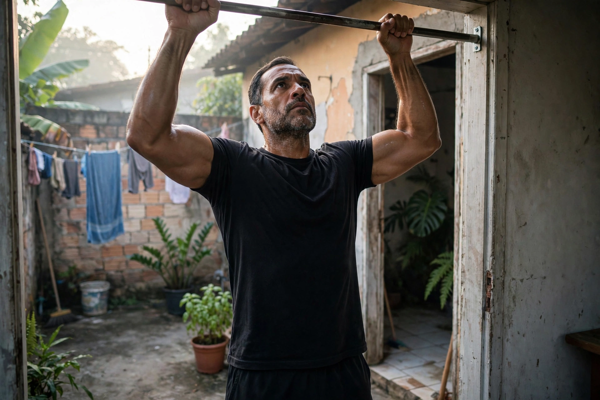

NÃO TENHA DESCULPA: Faça Seu Treino em Casa Após os 40 e Recupere Sua Potência

Se você tem mais de 40 anos, trabalha o dia todo e acha que precisa de academia cara para voltar a ser forte, eu vou te provar que é desculpa. Eu treino no quintal, com uma barra de R$ 120, 15 minutos por dia, e hoje faço 10 Muscle Up seguidos. Sem personal, sem suplemento importado, sem desculpa.
Quando eu tinha 89kg, sedentário, com dor nas costas e vergonha de tirar a camisa, eu usei as 3 desculpas clássicas do homem 40+: "não tenho tempo", "academia é longe", "minha idade não deixa mais". Todas eram mentiras confortáveis. O que me salvou foi montar um treino em casa, simples, repetível e que me dava potência de verdade — não só estética.
Neste artigo, vou te mostrar exatamente como eu quebrei cada desculpa, o plano de 15 minutos que uso até hoje, e vou deixar meu vídeo com mais de 1.000 views onde executo o movimento completo.
1. As 3 desculpas que mais matam homens após os 40
Desculpa 1: "Não tenho tempo"
Eu trabalho 10h por dia. Eu dizia que não tinha 1h para academia. Mas eu tinha 15 minutos antes do banho. 12 a 20 minutos de calistenia intensa geram mais ganho de força em 40+ do que 60 minutos de musculação fofo. Segunda, quarta e sexta, 06:15 da manhã, barra fixa.
Desculpa 2: "Preciso de academia"
Para potência após os 40 você precisa de 3 movimentos: puxar, empurrar e agachar. Uma barra fixa de porta (R$ 80 a R$ 150), 2m² de chão e seu peso corporal. Eu gastei R$ 120 na barra e R$ 0 de mensalidade nos últimos 18 meses.
Desculpa 3: "Já estou velho para muscle up"
Muscle Up é justamente o antídoto para o homem 40+: junta puxada + explosão + mergulho. Eu comecei com 0. Fiz minha primeira barra com elástico. 90 dias depois, fiz 1 Muscle Up feio. Hoje faço 10 seguidos.
2. Prova real: meu vídeo de 10 Muscle Up (1.000+ views)
2. Prova real: meu vídeo de 10 Muscle Up em casa (1.000+ views)
Gravação real no quintal, sem filtro. Prova que dá pra fazer após os 40.
2. Prova real: meu vídeo de 10 Muscle Up em casa (1.000+ views)
Gravação real no quintal, sem filtro. Prova que dá pra fazer após os 40.
▶️ Ver no YouTube e deixar seu comentário
👆 Se o vídeo não carregar aqui, clique para assistir no YouTube. Prova real gravado em casa.
Alguns de nossos Shorts no You Tube já passaram de 1.000 views porque homens da nossa idade se identificaram. Deixe seu comentário lá: "VIM DO ARTIGO".
3. O treino de 15 minutos que uso para não ter desculpa
| Exercício | Nível 1 (0-4 barras) | Nível 2 (5-10 barras) | Descanso |
|---|---|---|---|
| Barra fixa supinada | 5x máximo com elástico | 5x 60% do máximo | 90s |
| Flexão com pausa 2s | 4x 8-12 | 4x 15-20 | 60s |
| Agachamento + salto | 4x10 | 4x15 | 60s |
| Transição Muscle Up | 3x5 cada lado | 3x8 explosivo | 90s |
| Prancha | 3x30s | 3x60s | 45s |
Como progredir: Toda sexta, tente 1 repetição a mais. Anote em caderno. O que não é medido, não evolui.
4. O que comer e quanto dormir
- Proteína: 1,6g por kg. 81kg = 130g por dia.
- Água: 35ml por kg. 81kg = 2,8L.
- Sono: 7h30 mínimo. Músculo cresce dormindo.
- Creatina: 5g todo dia.
5. Conclusão
Você não precisa de academia perfeita. Precisa de uma barra, de um chão e de parar de negociar com suas desculpas. Comece hoje com 1 barra com elástico. Em 30 dias você vai agradecer por ter começado.
← Voltar para todos os artigos Fazer Treino de 15 Min Agora →